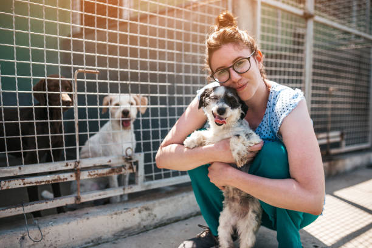

Our Story
Founded in 2015, Hope Haven Animal Rescue began as a grassroots effort by a group of passionate animal lovers in our community. Since then, we've grown into a thriving organization, rehoming over 1,200 pets and spreading awareness about animal welfare.

What We Do
We focus on rescuing animals from shelters, abusive situations, and the streets. Each animal receives medical care, vaccinations, and a thorough behavior evaluation before being placed for adoption.
Meet Our Team
Our team includes dedicated staff and volunteers — from foster parents to event planners — who give their time and love to our mission. Together, we’re making a difference.
